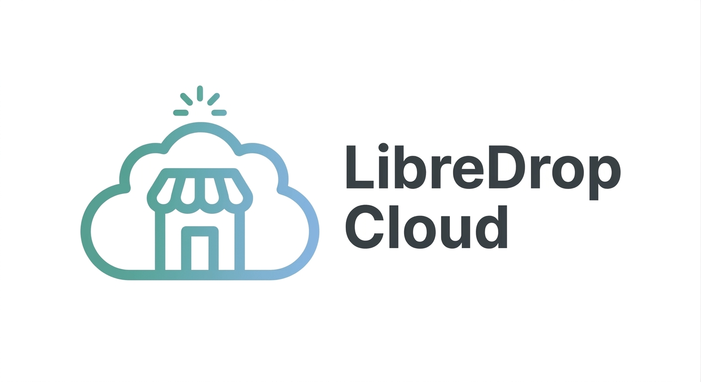

Familia LibreDrop · Open Source · Hecho en Guatemala
Tu tienda online, simple. Y con Cloud, lista para vender por Q100/mes.
Publicá tus productos y recibí pedidos por WhatsApp o por tus redes sociales, sin comisiones. Elegís cómo usarla: autoalojás el proyecto Open Source, o dejás que LibreDrop Cloud la monte y la mantenga por vos.
Panel + tienda pública · 6 paletas de color · Catálogo · WhatsApp y redes

LibreDrop Cloud · Listo para usar · Q100/mes
LibreDrop
Una plataforma Open Source para crear tiendas online simples
Proyecto Open Source (AGPLv3), hecho en Guatemala, con un objetivo claro: que vender online sea simple y sin comisiones.
-
Panel y tienda pública. Administrás tus tiendas y tu catálogo desde el
panel, y cada tienda se publica en
/tienda/<slug>. - Catálogo de categorías y productos. CRUD por tienda: nombre, descripción, precio e imagen.
- Vendé por donde te escriben. Cada tienda elige sus canales: WhatsApp («Comprar por») e Instagram, Facebook o TikTok («Preguntar por»). Sin pasarelas obligatorias ni comisiones por venta.
-
Multitenant por
tenant_id. Mismas tablas para todos, cada registro con su tienda y el acceso filtrado por membresía. Sin esquemas por tienda. - Tu tienda, con tus colores. Elegí una de las 6 paletas de LibreLabs para LibreDrop (Azul, Rosa, Verde, Morado, Café u Oscuro) o personalizá los colores a tu gusto, y sumá tus redes.
Estado real: proyecto en desarrollo activo. Ya funcionan el registro, el panel, el catálogo, la tienda pública, la apariencia, los canales de compra y la activación del plan; los pedidos se cierran por WhatsApp o por tus redes.

LibreDrop Cloud
El mismo LibreDrop, administrado por LibreLabs.
LibreDrop Cloud es el mismo software LibreDrop, ya montado y mantenido por LibreLabs. Vos solo definís tu catálogo y recibís pedidos; nosotros nos ocupamos del servidor. Un único precio: Q100/mes.
Qué resuelve
- Infraestructura y despliegue. No te preocupás por el servidor.
- Instalación, configuración y mantenimiento a cargo de LibreLabs.
- Sin comisiones por venta: seguís vendiendo por WhatsApp o tus redes.
Cómo funciona
- Tocás «Empezar» y entrás a LibreDrop Cloud.
- Creás tu cuenta: tu tienda se genera automáticamente al registrarte.
- Activás tu plan de Q100/mes y cargás tu catálogo para empezar a vender.
Los detalles operativos del servicio (límites, almacenamiento, soporte) serán definidos y publicados oficialmente por LibreLabs.
Comparación
LibreDrop vs. LibreDrop Cloud
Es el mismo software. La diferencia es quién se encarga de la infraestructura.
| LibreDrop (Open Source) | LibreDrop Cloud | |
|---|---|---|
| Qué es | El software Open Source, libre para usar. | El mismo software, como servicio administrado. |
| Precio | Gratis (el software es libre). | Q100/mes, un único precio. |
| Instalación | La hacés vos (self-hosting). | La hace LibreLabs por vos. |
| Servidor y mantenimiento | Corren por tu cuenta. | A cargo de LibreLabs. |
| Venta por WhatsApp y redes | Sí. | Sí. |
| Catálogo y multi-tenant | Sí. | Sí. |
| Código (AGPLv3) | Podés estudiarlo y modificarlo. | El mismo software; el código sigue abierto. |
| Ideal para | Quien quiere control total y no le molesta administrar. | Quien quiere vender ya, sin ocuparse de la tecnología. |
Open Source
Hecho para ser libre.
LibreDrop es Open Source: el software está abierto para que puedas estudiarlo, modificarlo y ejecutarlo bajo los términos de su licencia.
- Transparencia. Cualquiera ve qué hace el código y cómo se manejan tus datos.
- Self-hosting. Podés ejecutar LibreDrop en tu propia infraestructura.
- Control sobre tus datos. No quedan encerrados en un proveedor propietario.
LibreDrop se publica bajo la GNU Affero General Public License v3: podés usarla, estudiarla y modificarla. Si lo ofrecés como servicio, el código —incluidas tus modificaciones— debe seguir disponible.
Leer la licenciaEl proyecto está en desarrollo activo y hay lugar para tu contribución: hacé un fork, sumá tus cambios con tests y abrí un pull request.
Ver el repositorioTecnología
Pensada para gente común, construida con herramientas serias
Ver README técnico del proyecto- Python 3.12+
- Django 6.1
- Django REST Framework
- SimpleJWT
- PostgreSQL (Neon)
- Cloudinary
- Gunicorn + WhiteNoise
- React 18
- Vite
- React Router
Preguntas frecuentes
Lo que querés saber antes de elegir
¿Qué es LibreDrop?
Una plataforma Open Source (AGPLv3) para crear tiendas online simples: publicás tus productos y recibís pedidos por WhatsApp o por tus redes sociales (Instagram, Facebook o TikTok), sin comisiones ni intermediarios. Está hecha en Guatemala por LibreLabs.
¿Qué es LibreDrop Cloud?
El mismo software LibreDrop, administrado por LibreLabs: instalación, infraestructura y mantenimiento a cargo del equipo, por un único precio de Q100/mes. Solo definís tu catálogo y empezás a recibir pedidos.
¿Cuál es la diferencia entre LibreDrop y LibreDrop Cloud?
Es el mismo software. Con LibreDrop (Open Source) autoalojás y administrás todo vos. Con LibreDrop Cloud, LibreLabs se encarga de la infraestructura, la instalación y el mantenimiento por Q100/mes.
¿LibreDrop es gratis?
Sí. LibreDrop como software es gratuito y podés instalarlo vos mismo (self-hosting). Con LibreDrop Cloud pagás el servicio administrado de Q100/mes para no encargarte de la instalación, el servidor ni el mantenimiento.
¿Por dónde recibo los pedidos?
Por los canales que active cada tienda. En WhatsApp se compra directo: al tocar un producto se abre el chat con el mensaje listo. En Instagram, Facebook o TikTok el cliente te escribe para preguntar. Sin pasarelas de pago obligatorias ni comisiones por venta.
¿Puedo vender por redes sociales?
Sí, y es lo más común. Activás Instagram, Facebook o TikTok como canales de tu tienda y aparecen como botones «Preguntar por…» junto a cada producto. WhatsApp —o el canal que elijas— sigue disponible para cerrar la compra.
¿Qué hay implementado hoy?
El registro, el panel de administración, el catálogo, la tienda pública
(/tienda/<slug>), las paletas de color, los canales de compra
(WhatsApp, Instagram, Facebook y TikTok) y la activación del plan. El proyecto
sigue en desarrollo activo.
¿Puedo personalizar los colores de mi tienda?
Sí. LibreLabs ofrece 6 paletas para LibreDrop —Azul, Rosa, Verde, Morado, Café y Oscuro— y además podés definir tus propios colores. La tienda pública aplica esa paleta automáticamente, junto con tus redes sociales.
¿No querés administrar nada?
LibreDrop Cloud deja el trabajo pesado a LibreLabs: infraestructura, instalación y mantenimiento por Q100/mes. O usá LibreDrop Open Source y tené el control total, gratis.
«Empezar» te lleva a LibreDrop Cloud, donde creás tu perfil y tu tienda. Un único precio: Q100/mes.